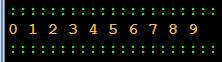

Ficha09_002
Numbers 0..9 - Do - While
Algorithm to write the numbers between o and 9.
Use the do while statement
|

|


Pseudocódigo
// Programmer Ant0ni0 M@ns0 - Ant0ni0 M@ns0
begin MainProgram
define integer i = 0
do
write i + " "
execute i = i + 1
while i < 10
end MainProgram
//Pseudocódigo - Automatic translated by Algorithmi 22.05
//(c) Ant0nio M@nso Sat, 2022 Oct 01 00:11
Download Ficha09_002.txt
Algorithmi 22.05 Student version
(c) Antonio M@nso 2022
Instituto Politécnico de Tomar - All rights reserved